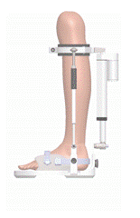

Projects & Grants
REST: Reconfigurable Lower Limb Exoskeleton for Effective Stroke Treatment in Residential Settings
EPSRC Standard Research Grant (REST), Apr 2019-Apr 2023, £1.1M (Principal Investigator, PI – £413k assigned to KCL).


According to the UK Guidelines for stroke rehabilitation, the national standard for stroke rehabilitation is at
least 45 minutes per day of each relevant therapy for a minimum of 5 days per week to people who have the ability
to participate. However, this standard has never been met due to the decreasing availability of rehabilitation
services and increasing pressures on the NHS. In the UK, over 600,000 people with stroke live further than 20km from
a stroke support group, the majority of whom live with severe mobility issues. It would be very challenging and costly,
or even impossible for them to travel and receive rehabilitation treatments regularly in hospitals or rehabilitation
centres. The NHS Five Year Forward View therefore made recommendations in 2017 to bring rehabilitation to people in
their own homes and care homes.
People with stroke commonly experience post-stroke movement disorders, particularly weakness, disordered movement patterns,
including post-stroke dystonia and spasticity. The majority of stroke patients are disabled and dependent on their family members
or others for some or all of their daily living activities.
Our long-term goal is to develop a nationwide robot-assisted home-based rehabilitation programme, which builds upon the technology
and the experimental evidence originated from this proposal. This project will establish a transferable technology for stroke
survivors' rehabilitation at home, with a potential impact on millions of people in the UK and worldwide.
Read more
Precise Trajectory-Tracking Control for Robotic Seam Welding based on Multi-Sensor Fusion
Royal Society International Exchanges 2021 (China-UK), Mar 2022-present, £12k (Principal Investigator, PI)


The trajectory-tracking control accuracy of robotic welding has a significant impact on the quality of the produced weld seams.
However, weld-seam quality can degrade due to the sparse sensory information of the welding environment, which ineluctably leads
to imprecise control. Inadequate weld-seam information and implementation of unsophisticated control algorithms can induce sizeable
weld-seam trajectory deviations. An effective approach entails usage of multi-sensor fusion and sophisticated control strategies
for robotic welding, to obtain geometric and postural information of the weld seam, so as to accurately track the associated
trajectory, and to study the complex robotic-welding operation. However, combining these distinct technologies into a unified
framework to achieve precise weld-seam trajectory tracking, has proven to be a challenging research topic that has attracted
increasing attention from scholars around the world. To tackle this problem, we propose integration of multi-sensor fusion and
visual-servoing-based control strategies to enhance the system’s environmental perception ability, and augment its
trajectory-tracking accuracy. Given that there is limited literature on this topic, this international exchange project will
serve to facilitate a collaboration between the teams at WIT, specialising in robot-welding path planning, and at KCL, focusing
on multi-sensor fusion and trajectory-tracking control.
As part of this International Exchange activity, the KCL and WIT teams will explore how the usage of multi-sensor fusion and
control strategies can enhance weld-seam trajectory-tracking accuracy via visual-servoing. The main objective will be the
development of a visual-servoing-based, trajectory-tracking algorithm, taking into consideration the quality of the weld seam
produced by the robotic welding process.
Read more

KCL and Sirius Constellation Ltd Knowledge Transfer Partnerships 21_22
KTP KCL , KTP: 2021 to 2022 (UKRI), Jan 2022-Oct 2023, £204k (Principal Investigator, PI).


To develop and deploy an autonomous maritime domain awareness system integrating terrestrial and satellite data with a tasked
aerial detection capability, using drone technology. This will provide a more secure and effective monitoring of the UK's extensive
coastline.
Read more